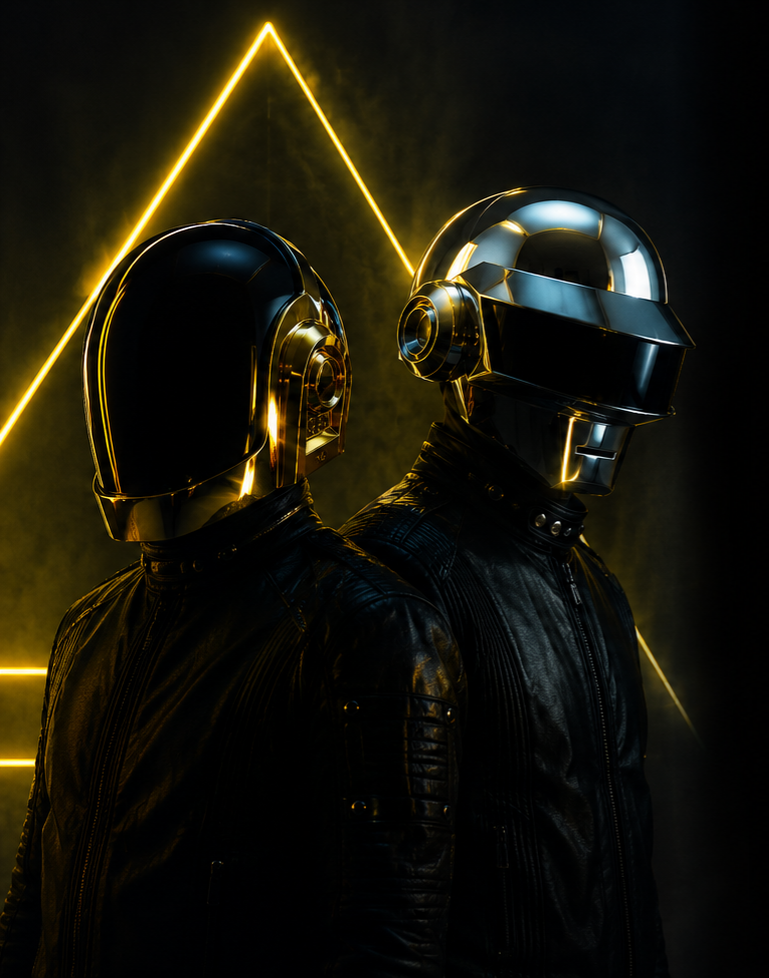
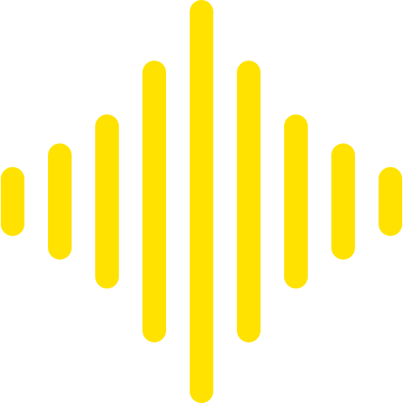
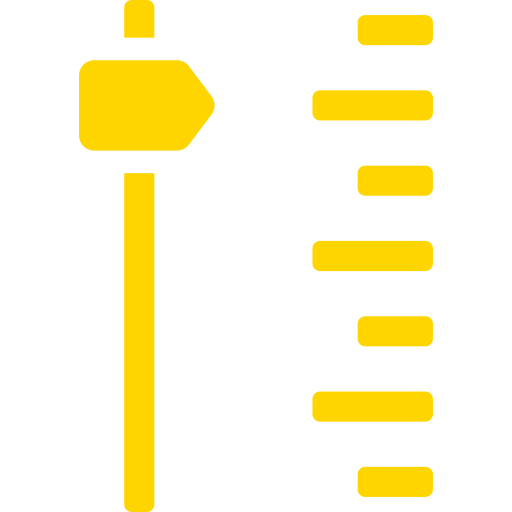
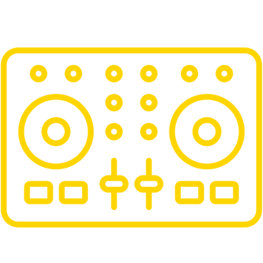

"La música puede cambiar el mundo porque puede cambiar a las personas."
- Daft Punk



Un viaje entre música electrónica, tecnología y evolución sonora. Explorá cómo la innovación transformó el sonido en una experiencia global.

Daft Punk fue un dúo francés de música electrónica formado en 1993 por Guy-Manuel de Homem-Christo y Thomas Bangalter. Reconocidos mundialmente por su estética futurista y el uso de cascos robóticos, lograron construir una identidad única dentro de la industria musical.
A lo largo de su carrera, se destacaron por revolucionar la música electrónica combinando géneros como el house, disco y funk con una fuerte presencia visual. Su influencia marcó a generaciones de artistas y redefinió el concepto de espectáculo en vivo dentro de la música moderna.

Electronica
Innovación
Influencia Global
Identidad Unica
La música electrónica es un género que surgió a mediados del siglo XX y ganó popularidad entre las décadas de 1970 y 1980 con el desarrollo de sintetizadores, cajas de ritmo y computadoras.
Se caracteriza por la creación de sonidos artificiales, ritmos repetitivos y la experimentación sonora. Con el paso del tiempo, evolucionó en múltiples subgéneros como el house, techno, disco y electrónica experimental.


Alive 2007 - Live Performance
Una de las giras mas iconicas de la historia electronica
"La música puede cambiar el mundo porque puede cambiar a las personas."
- Daft Punk